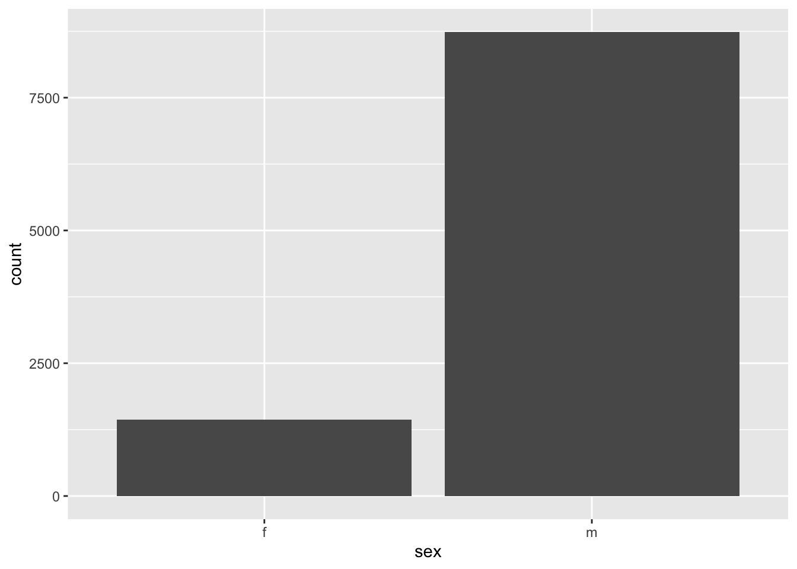
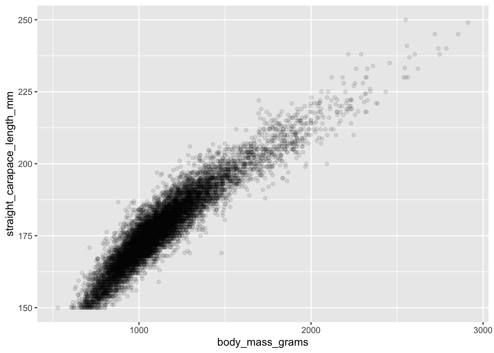
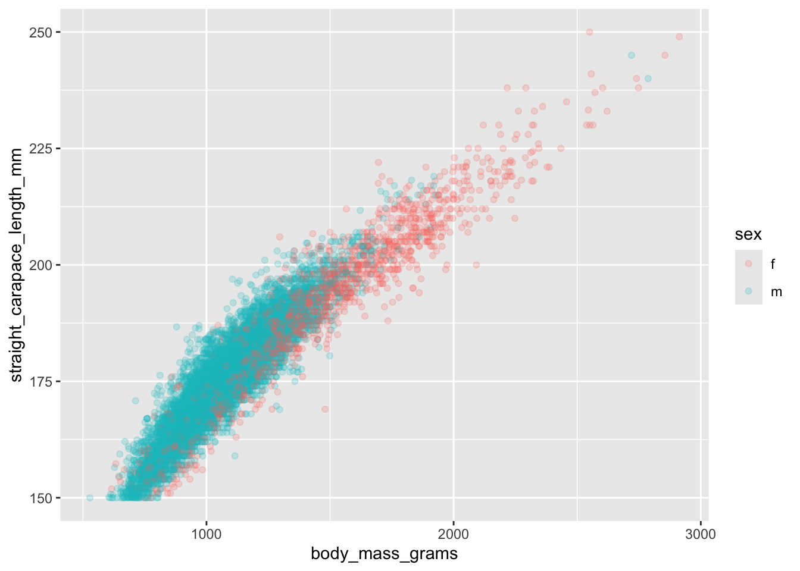
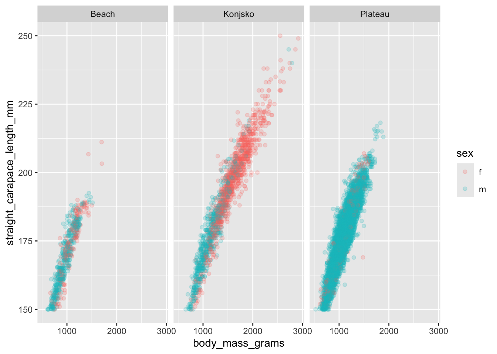

library(readr)
library(ggplot2)
library(dplyr)Practice Activity 5: Visualize the Tortoises
Setup
First, we declare our package dependencies.
Golem Grad Tortoise Data
First, we load in the data. You will have to install.packages("tidytuesdayR").
tuesdata <- tidytuesdayR::tt_load(2026, week = 9)
tortoise_data <- tuesdata$tortoise_body_condition_cleanedTake a look at the variables in your downloaded data by running the following code. This code with the glimpse function reports the data type for each column in the dataset.
glimpse(tortoise_data)Rows: 10,174
Columns: 9
$ individual <chr> "1", "1", "1", "1", "1", "1", "1", "1", "1…
$ year <dbl> 2008, 2009, 2010, 2011, 2011, 2014, 2016, …
$ year_recode <dbl> 1, 2, 3, 4, 4, 7, 9, 10, 11, 12, 13, 13, 1…
$ season <chr> "Summer", "Summer", "Spring", "Spring", "S…
$ locality <chr> "Plateau", "Plateau", "Plateau", "Plateau"…
$ sex <chr> "m", "m", "m", "m", "m", "m", "m", "m", "m…
$ body_mass_grams <dbl> 1230, 1271, 1239, 1205, 1300, 1269, 1302, …
$ body_condition_index <dbl> 6.717641, 6.901607, 6.672052, 6.457663, 7.…
$ straight_carapace_length_mm <dbl> 183.10, 184.16, 185.70, 186.60, 182.30, 18…You should also take a peak at the dataset by double-clicking on it in the environment.
What does one row in the data represent?
What are the some of the other variables and their types? Use
unique()andsummary()in the console to explore the data further.
Select and create an appropriate graphic to answer the following questions:
“Does it seem easier to capture/recapture male or female tortoises?”
How many captures are there for each sex? What variables do you need to answer this question?
- Use
ggplot2to draw a barchart of the count of captures for each tortoise sex.
tortoise_data |>
ggplot(aes(x = sex)) +
geom_bar()
“What are the differences between male and female tortoises across the three locations (Beach Mainland Beach, Plateau Mainland, and Konjsko Island) in terms of body mass or carapace length?”
- Use
ggplot2to create a scatterplot of the relationship between the body mass (body_mass_grams) and carapace length (straight_carapace_length_mm).
That’s a lot of data! Use alpha = 0.1 in your scatterplot to create a transparency effect to help with overplotting.
tortoise_data |>
ggplot(aes(x = body_mass_grams, y = straight_carapace_length_mm)) +
geom_point(alpha = 0.1)
- Building off the previous graph, add an aesthetic to differentiate the location (
locality) on your scatterplot by color.
tortoise_data |>
ggplot(aes(x = body_mass_grams,
y = straight_carapace_length_mm,
color = sex)
) +
geom_point(alpha = 0.2)
- Building off the same graph, incorporate location (
locality). There may be more than one method to address this, however, one method will more easily address the questions below.
tortoise_data |>
ggplot(aes(x = body_mass_grams,
y = straight_carapace_length_mm,
color = sex)
) +
geom_point(alpha = 0.2) +
facet_wrap(~ locality)
TipCanvas Submission
xxx
Note
Note that this dataset comes from TidyTuesday 2026 week 9.